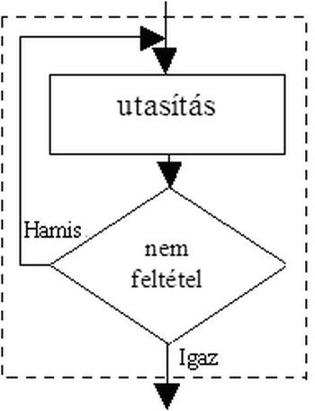
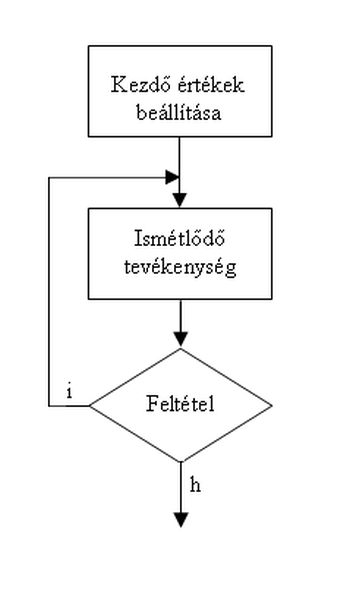

Ciklusok
Ciklus (programozás)
A ciklus, vagy iteráció a számítógép-programozás és az algoritmusok egyik
alapvető eszköze, amely az ismétlődő (azonos vagy hasonló) tevékenységek
megvalósítására szolgál. A ciklus beépítését a programba
ciklusszervezésnek is nevezik. A ciklust az egyes programozási nyelvek
különböző kulcsszavakkal valósítják meg.
A ciklus részei:
Alább egy egyszerű BASIC nyelvű ciklust láthatunk, amelyik 2-től 5-ig
egyesével haladva kiírja a számokat és a négyzetüket:
FOR i=2 TO 5 STEP 1 PRINT i, " négyzete: ", i*i NEXT i
Ebben a ciklusban az i a ciklusváltozó, amely a ciklus kezdetén értéket
kap. A szerepe kettős: egyrészt vezérli a ciklust, mivel a ciklusváltozó
értékétől függ, hogy folytatódik-e a futás, másrészt a pillanatnyi értéket
a program felhasználja. A ciklus futásának kezdetén tehát az i értéke 2
lesz; mivel ez kisebb, mint 5, ezért a ciklusmag lefut, vagyis a program
kiírja a képernyőre a
Típusai
Feltételes ciklus (while)
A feltételes ciklus olyankor használatos, amikor nem feltétlenül ismert
előre, hogy futásidőben hányszor kell a ciklusnak lefutnia (például egy
számítógép lemezkatalógusában lévő fájlok listázása). Az viszont ismert,
hogy milyen feltétel teljesülése esetén kell a programnak tovább futnia
vagy leállnia. (Ez a kettő egymással ekvivalens, hiszen a további futás,
illetve a leállás feltétele egymás tagadása.) A feltétel teljesülését
vizsgálhatjuk a ciklusfejben vagy a ciklusvégben is; a különbség abban fog
állni, hogy legalább egyszer lefut-e a ciklus.
Elöltesztelő ciklus
Az elöltesztelő ciklus sémája:
Ismételd, amíg a feltétel igaz utasítások ciklus vége

Hátultesztelő ciklus
A hátultesztelő ciklus sémája:
Ismételd utasítások amíg a feltétel igaz
Mivel a feltételvizsgálat a ciklusmag után áll, ezért a hátultesztelő
ciklus legalább egyszer mindenképpen lefut. A konkrét programnyelvi
megvalósítástól függ, hogy a hátultesztelő ciklusban a folytatás vagy a
kilépés feltételét kell-e megadni. A ciklus az első esetben addig fut,
amíg a ciklusvégben megadott feltétel igaz (ennek tipikus kulcsszava a
while), a másik esetben pedig addig, amíg igazzá nem válik (tipikus
kulcsszava az until).

Általános alakja a következő:
do { utasítás(ok); } while (feltétel);